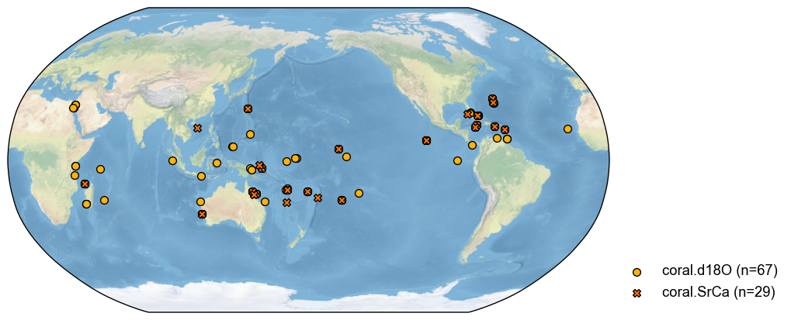
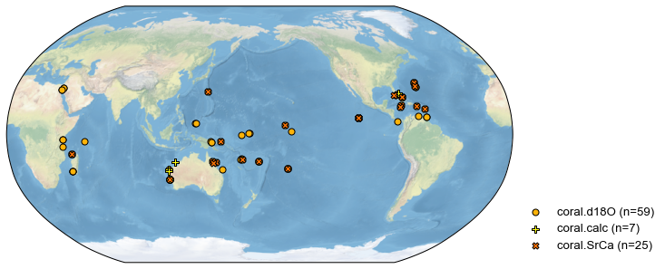
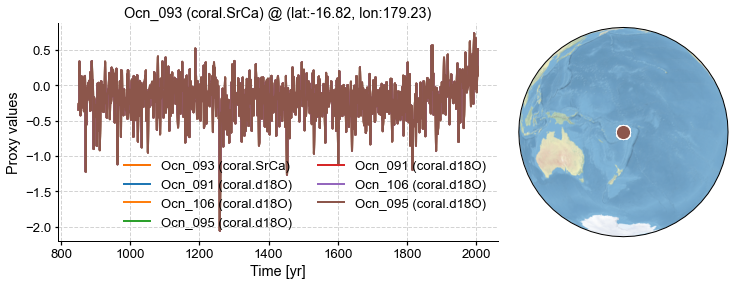

Handling duplicate proxies in a ProxyDatabase#
A common situation is for a ProxyDatabase to contain records that are either exact duplicates of each other, or whose series are so highly correlated as to be redundant. This is generally an undesirable sitation, and can even be fatal to some climate field reconstruction algorithms like GraphEM. Therefore, we need to identify and remove such duplicates.
This notebook shows how to achive that goal with the cfr utilities.
[1]:
%load_ext autoreload
%autoreload 2
import cfr
print(cfr.__version__)
Load a database with duplicated proxies#
[2]:
# load a proxy database
job = cfr.ReconJob()
job.load_proxydb('pseudoPAGES2k/ppwn_SNRinf_fta')
fig, ax = job.proxydb.plot()

[3]:
# filter the database to focus on corals
job.proxydb = job.proxydb.filter(by='ptype', keys='coral')
fig, ax = job.proxydb.plot()

[4]:
job.proxydb = job.proxydb.center([1951, 1980]) # optional
Centering each of the ProxyRecord: 100%|██████████| 96/96 [00:00<00:00, 7953.01it/s]
Find the duplicates#
Note that this currently works only for records without NaNs.
[5]:
# r_thresh = 0.9 by default, R >= r_thresh will be regarded as duplicates
pdb_dups = job.proxydb.find_duplicates(r_thresh=0.9, time_period=[1001, 2000])
fig, ax = pdb_dups.plot()
>>> Groups of duplicates:
1 {'Ocn_075', 'Ocn_156', 'Ocn_157'}
2 {'Ocn_078', 'Ocn_062', 'Ocn_139', 'Ocn_061', 'Ocn_077', 'Ocn_076'}
3 {'Ocn_095', 'Ocn_091', 'Ocn_106'}
4 {'Ocn_068', 'Ocn_145', 'Ocn_144', 'Ocn_066', 'Ocn_069', 'Ocn_067', 'Ocn_138'}
5 {'Ocn_125', 'Ocn_096', 'Ocn_127', 'Ocn_178'}
6 {'Ocn_150', 'Ocn_169', 'Ocn_147', 'Ocn_168', 'Ocn_149', 'Ocn_111', 'Ocn_112', 'Ocn_071', 'Ocn_151', 'Ocn_072', 'Ocn_152'}
7 {'Ocn_107', 'Ocn_129', 'Ocn_177', 'Ocn_103', 'Ocn_098', 'Ocn_128'}
8 {'Ocn_082', 'Ocn_080'}
9 {'Ocn_108', 'Ocn_181', 'Ocn_123'}
10 {'Ocn_115', 'Ocn_116'}
11 {'Ocn_180', 'Ocn_179'}
12 {'Ocn_114', 'Ocn_154'}
13 {'Ocn_097', 'Ocn_166', 'Ocn_130'}
14 {'Ocn_142', 'Ocn_110', 'Ocn_140', 'Ocn_060', 'Ocn_070'}
15 {'Ocn_183', 'Ocn_165', 'Ocn_164', 'Ocn_122', 'Ocn_176', 'Ocn_175'}
16 {'Ocn_121', 'Ocn_120'}
17 {'Ocn_119', 'Ocn_162', 'Ocn_160', 'Ocn_159', 'Ocn_163', 'Ocn_161'}
18 {'Ocn_109', 'Ocn_093'}
19 {'Ocn_153', 'Ocn_155'}
20 {'Ocn_131', 'Ocn_084'}
21 {'Ocn_141', 'Ocn_143'}
>>> Hint for the next step:
Use the method `ProxyDatabase.squeeze_dups(pids_to_keep=pid_list)` to keep only one record from each group.

[6]:
fig, ax = pdb_dups.records['Ocn_161'].plot_dups(lgd_kws={'ncol': 2})

In this example, those pseudoproxies are all identical, so one would want to exclude but one of those. We can do so using squeeze_dups():
[7]:
# squeeze the dupilicates manually
# pids_to_keep = ['Ocn_178', 'Ocn_106', 'Ocn_179', 'Ocn_160', 'Ocn_170', 'Ocn_076', 'Ocn_082', 'Ocn_181', 'Ocn_164', 'Ocn_121', 'Ocn_130', 'Ocn_083', 'Ocn_143', 'Ocn_116', 'Ocn_158', 'Ocn_066', 'Ocn_150', 'Ocn_103', 'Ocn_154', 'Ocn_075', 'Ocn_171']
# pdb_to_keep = pdb_dups.squeeze_dups(pids_to_keep=pids_to_keep)
[8]:
pdb_to_keep = pdb_dups.squeeze_dups()
>>> Note: since `pids_to_keep` is not specified, the first of each group of the duplicates is picked.
>>> pids to keep (n=21):
{'Ocn_095', 'Ocn_107', 'Ocn_075', 'Ocn_125', 'Ocn_115', 'Ocn_119', 'Ocn_109', 'Ocn_114', 'Ocn_082', 'Ocn_131', 'Ocn_108', 'Ocn_121', 'Ocn_097', 'Ocn_068', 'Ocn_078', 'Ocn_141', 'Ocn_180', 'Ocn_183', 'Ocn_142', 'Ocn_153', 'Ocn_150'}
[9]:
# update the proxy database, excluding duplicates
job.proxydb = job.proxydb - pdb_dups + pdb_to_keep
fig, ax = job.proxydb.plot()

[ ]: